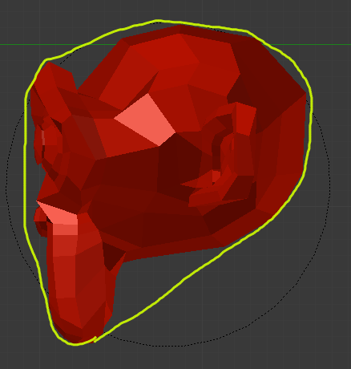

Rigid Body Physics¶
Probably the most common type of object in the Game Engine. It will give/receive collisions and react with a change in its velocity and its rotation. A rigid body ball would begin rotating and roll down (where a Dynamic ball would only hit and slide down the ramp).
The idea behind rigid body dynamics is that the mesh does not deform. If you need deformation you will need to either go to Soft Body or else fake it with animated Actions.
For more documentation, see the general physics page.
Tùy Chọn -- Options¶
Ghi chú
Truy Cập bpy -- bpy Access
Note that, most of these properties are accessible through
the non-BGE scripting API via bpy.data.objects["ObjectName"].game,
which is of type bpy.types.GameObjectSetting. This is useful so you can,
for example, set a range of objects to have gradated values via a for-loop.
- Diễn Viên -- Actor
- Enables detection by Near and Radar Sensors.
- Ảo Ảnh -- Ghost
- Disables collisions completely, similar to No collision.
- Vô Hình -- Invisible
- Does not display, the same as setting the object to unrendered (such as unchecking the camera icon in the Outliner).
- Dùng Trường Lực Chất Liệu -- Use Material Force Field
- Materials can have physics settings on them as well: Friction, Elasticity, Force Field (positive or negative force), and also Dampening to other materials. When you turn on this checkbox, you are enabling the Material to exhibit this spring force.
- Xoay Chiều Dùng Pháp Tuyến -- Rotate From Normal
- Nội dung cần viết thêm.
- Không Được Ngủ -- No Sleeping
- Prevents simulation meshes from sleeping. When an object has a linear velocity or angular velocity, it is in motion. It will detect collisions, receive gravity, etc. Once these thresholds are close to zero, it will cease these calculations -- until another object interacts with it wake it up.
- Khối Lượng -- Mass
- Affects the reaction due to collision between objects -- more massive objects have more inertia. Will also affect material force fields. Will also change behaviors if you are using the suspension and steering portions of Bullet physics.
- Bán Kính -- Radius
- If you have the "Collision Bounds: Sphere" set explicitly (or implicitly through having the Collision Bounds subpanel unchecked), this will multiply with the Object's (unapplied) Scale. Note that none of the other bounds types are affected. Also note that in the 3D View the display will show this for all types, even though it is only actually used with Sphere.
| Đơn Giản -- Basic | Radius= 1.5 | Unapplied Scale | Applied Scale | Ranh Giới Va Đập -- Collision Bounds |
|---|---|---|---|---|
| Rolls, radius of 1 BU | Rolls, radius of 1.5 BU (after "popping" upward) | Rolls, radius of 1.5 BU | Rolls, radius of 1 BU (!) | Default (which is Sphere) |
| Slides, extent of 1 BU | Slides, extent of 1 BU | Slides, extent of 1 BU | Slides, extent of 1 BU | Hình Hộp -- Box |
| "" | "" | "" | "" | Bao Lồi -- Convex Hull |
| Slides, extent of 1 BU (but with more friction than above) | Slides, extent of 1 BU (but with more friction than above) | Acts insane | Slides extent of 1.5 BU | Khung Lưới Tam Giác -- Triangle Mesh |
- Hệ Số Hình Dáng -- Form Factor
- For affecting the Inertia Tensor. The higher the value, the greater the rotational inertia, and thus the more resistant to torque. You might think this is strange, considering Dynamic types do not have torque in response to collisions -- but you can still see this value's effects when you manually apply Torque.
- Ma Sát Dị Hướng -- Anisotropic Friction
- Isotropic friction is identical at all angles. Anisotropic is directionally-dependent. Here you can vary the coefficients for the three axes individually, or disable friction entirely.
- Tốc Lực -- Velocity
Limit the speed of an object.
- Tối Thiểu -- Minimum
- The object is allowed to be at complete rest, but as soon as it accelerates it will immediately jump to the minimum speed.
- Tối Đa -- Maximum
- Top speed of the object.
- Giảm Chấn -- Damping
Increase the "sluggishness" of the object.
- Dịch Chuyển -- Translation
- Resist movement (0 - 1). At 1 the object is completely immobile.
- Xoay Chiều -- Rotation
- Resist rotation, but not the kind of rotation that comes from a collision. For example, if a Motion Controller applies Torque to an object, this damping will be a factor.
- Lock Translation
- Seize the object in the world along one or more axes. Note that this is global coordinates, not local or otherwise.
- Khóa Xoay Chiều -- Lock Rotation
- Rigid body only -- Same, but for rotation (also with respect to the global coordinates).
Ranh Giới Va Đập -- Collision Bounds¶
The first thing you must understand is the idea of the 3D Bounding Box. If you run through all the vertices of a mesh and record the lowest and highest x values, you have found the x min/max the complete boundary for all x values within the mesh. Do this again for y and z, then make a rectangular prism out of these values, and you have a Bounding Box. This box could be oriented relative globally to the world or locally to the object's rotation.

Demonstration of a Local Bounding Box (left) and a Global Bounding Box (right).
The x extent, then, is half of the distance between the x min/max.
Throughout all of this you must be cognizant of the Object Origin. For the Game engine, the default Shift-Ctrl-Alt-C, 3 or is unlikely to get the desired placement of the Collision Bounds that you want. Instead, you should generally set the origin by looking at the Tool Shelf after you do the Set Origin, and changing the Center from Median Center to Bounds Center. Blender will remember this change for future Shift-Ctrl-Alt-C executions.
All Collision Bounds are centered on this origin. All boxes are oriented locally, so object rotation matters.
Setting the origin to Bounds Center instead of Median Center.
A final introductory comment: When you set the Collision Bounds on an object, Blender will attempt to display a visualization of the bounds in the form of a dotted outline. Currently, there is a bug: The 3D View does not display this bounds preview where it actually will be during the game. To see it, go to and look for the white (or green, if sleeping) geometry.
Now we can explain the various options for the Collision Bounds settings:
- Mặc Định -- Default
- For Dynamic and Static objects, it is a Triangle Mesh (see below). For everything else, it is a Sphere (see below).
- Vỏ Nhộng -- Capsule
- Which is a cylinder with hemispherical caps, like a pill. Radius of the hemispheres is the greater of the X or Y extent. Height is the Z bounds.
- Hình Hộp -- Box
- The X, Y, Z bounding box, as defined above.
- Hình Cầu -- Sphere
- Radius is defined by the object's scale (visible in the N properties panel) times the physics radius (can be found in ). Note: This is the only bounds that respects the Radius option.
- Hình Trụ -- Cylinder
- Radius is the greater of the x or y extent. Height is the z bounds.
- Hình Nón -- Cone
- Base radius is the greater of the x or y extent. Height is the z bounds.
- Bao Lồi -- Convex Hull
Forms a shrink-wrapped, simplified geometry around the object.
A convex hull sketch.
- Triangle mesh
- Most expensive, but most precise. Collision will happen with all of triangulated polygons, instead of using a virtual mesh to approximate that collision.
- By Hand
This is not an option in the Physics tab's Collision Bounds settings, but a different approach, entirely. You create a second mesh, which is invisible, to be the physics representation. This becomes the parent for your display object. Then, your display object is set to ghost so it does not fight with the parent object. This method allows you to strike a balance between the accuracy of Triangle Mesh with the efficiency of some of the others. See the demo of this in the dune buggy to the right.

Another way to create Collision Bounds -- By hand.
{kind=link}
Tùy Chọn -- Options¶
There are only two options in the Collision Bounds subpanel.
- Lề -- Margin
"Add extra margin around object for collision detection, small amount required for stability." If you find your objects are getting stuck in places they should not, try increasing this to, say, 0.06.
Sometimes 0.06 is the default (such as on the Default Cube), but sometimes it is not. You have to keep an eye on the setting, or else learn the symptoms so you can respond when it gives you trouble. If you are lazy/paranoid/unsure/diligent/bored, you can always run this on the Python Console to bump all 0.0 margins to 0.06: for
objinbpy.data.objects:obj.game.collision_margin = obj.game.collision_marginor 0.06- Phức Hợp -- Compound
- "Add children to form compound collision object." Basically, if you have a child object and do not have this enabled, the child's collisions will not have an effect on that object "family" (though it will still push other objects around). If you do have it checked, the parent's physics will respond to the child's collision (thus updating the whole family).
Tạo Trướng Ngại Vật -- Create Obstacle¶
Todo